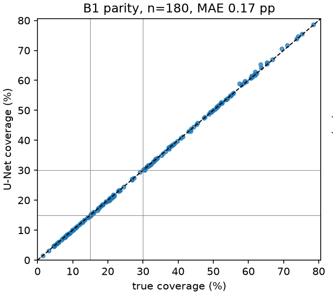
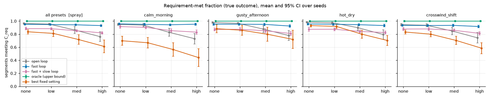
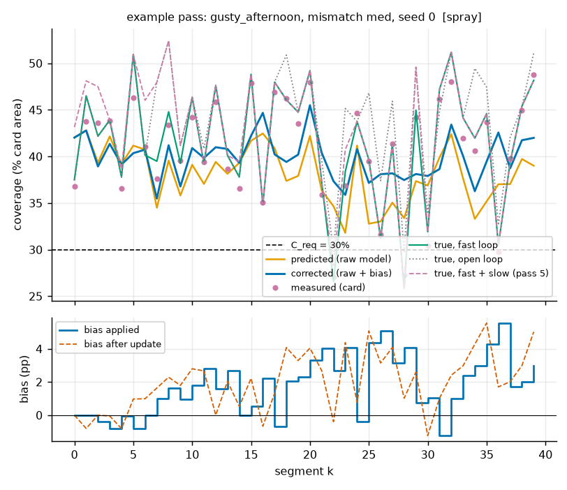
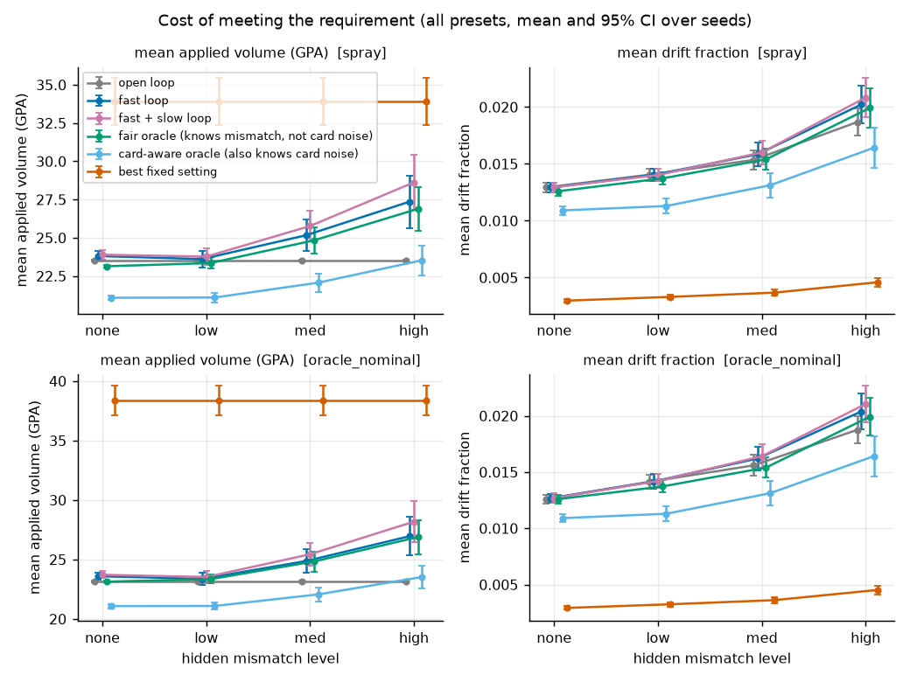
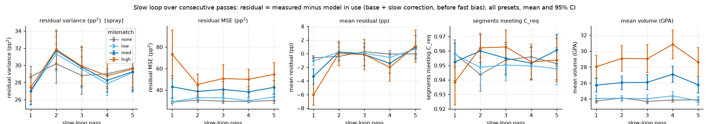
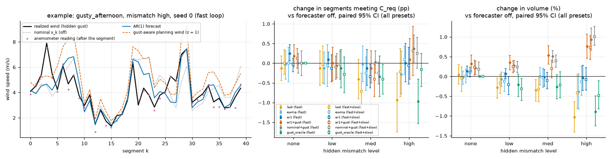
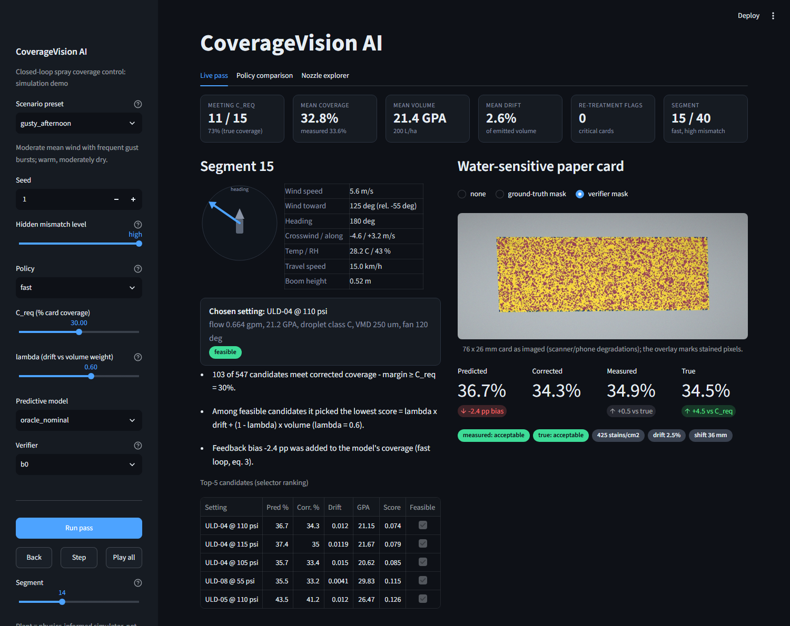

AI-Driven Closed-Loop Precision Spraying for Real-Time Application Optimization
ABE 598 Digital Agriculture · Midterm Project Report · due October 21, 2026
Team CoverageVision AI · Emery Brewer · Junjie Ao · Kinjalk Parth Built October 20, 2026 from the results files in the repository.
1 Summary
We built the closed loop of the proposal end to end and evaluated it inside a physics-informed simulator: a learned coverage model with a calibrated interval, a constrained setting selector, a water-sensitive-paper (WSP) renderer, classical (B0) and U-Net (B1) card readers, a fast loop that corrects the next segment and a slow loop that corrects the model between passes. The closed-loop criterion is met against a fair oracle that knows the hidden mismatch but not the per-card noise: the fast + slow loop recovers 96% [80, 107] of the open-loop-to-oracle gap at +4.1% [+2.8, +5.5] volume (target ≥ 50%, ≤ +10%). Against a card-aware oracle that also sees the per-card noise the volume half is missed (+17.2% [+15.4, +19.0]), because that oracle sees noise no controller can know. The model (2.84 pp MAE, ridge 3.32 pp), the selector (97.0% success at lower drift than the matched fixed setting) and card reading on our own cards (B0 1.44 pp, B1 0.20 pp MAE) meet their targets. On out-of-generator cards B1 drops to 1.74 pp and 88.3% class agreement (target 90%), and the real-card criterion is blocked by restricted data. Four extensions were tested and none is adopted by default: travel speed is inconclusive (a small open-loop drift gain, no closed-loop CI), boom height (alone or with speed) trades success for drift and volume, a wind forecaster lowers forecast error but not coverage failures, and a physics-first hybrid predictor is not better than pure ML in the loop. All results are simulator-internal.
2 Technical Progress and Results
2.1 Problem and system as built
Sprayers commit to settings before they see how weather and machine state change the deposit, and standard water-sensitive-paper (WSP) checks report problems only after the sprayer has passed. The proposal closes that loop: before each field segment a model predicts coverage and drift for every candidate setting, a selector picks the setting that meets the coverage requirement Creq at the lowest predicted drift and volume, the sprayer applies it, computer vision reads the coverage actually achieved from a WSP card, and the error corrects the next segments (fast loop) and the model between passes (slow loop). Without spray trials this semester, the whole loop runs in a physics-informed simulator with injected hidden mismatch (wind gusts, canopy interception, nozzle wear) that the model never sees.
The loop follows the proposal (Figure 1). Modules exchange versioned records defined in contracts.py (schema 1.2: optional travel speed and boom height added to the 1.0 setting). loop.py runs a 40-segment pass under six policies (open, fast, fast_slow, fair oracle, card-aware oracle_card, best_fixed) and logs one row per segment. All extensions are opt-in and default off; with them off, results are bit-identical to the baseline. The code base is 8,430 lines of Python with 288 test functions; the full suite (411 tests after parametrization) passes (32 logical cores, RTX 5070 Ti). All proposal modules are built, and the M3 and part of the M4 work is done ahead of schedule (Section 5.1).
Figure 1. CoverageVision loop as implemented, with source modules. Border color marks the module lead (orange Emery, green Junjie, blue Kinjalk, grey shared). Black arrows: forward pass for segment k; blue arrows: fast loop (bias b to the selector) and slow loop (coverage offset on the frozen model, refit between passes).
2.2 Nozzle catalog
data/catalog/nozzles.csv holds 316 chart rows for five families (TP65, XR110, DGX40, ULD120, 3D90; 43 family-size combinations). catalog.py interpolates flow along Q ∝ √P, recomputes GPA at 20 in spacing, and generates 547 candidate settings on a 5 psi grid. The validator reports 0 violations on four checks (square-root law, sampled GPA cells, droplet class monotone in pressure, ranges). Compromises: TP65 droplet class uses the 80° column (D3), DGX40 contributes flow only (D4), ULD and 3D rows come from manufacturer sheets [12], spray angles are nominal (D5).
2.3 Simulator
Parameter Integration and Physical Relationships.
The physics-informed simulator integrates environmental, machine, and spray-system parameters to estimate application performance under varying operating conditions. Environmental inputs include wind speed, wind direction, temperature, and relative humidity, which influence droplet transport and evaporation. Machine parameters include travel speed and boom height, which affect application rate and droplet displacement. Spray-system inputs include nozzle family, nozzle size, and operating pressure, with flow rate, droplet classification, and nominal spray angle derived from the manufacturer catalog described in Section 2.2.
These parameters interact through physical relationships rather than acting as independent predictors. Wind speed and direction determine cross-track and along-track wind components relative to machine travel, while boom height influences the distance droplets travel before deposition. Droplet size affects terminal settling velocity, evaporation, and susceptibility to wind displacement. Nozzle configuration and pressure influence flow rate and droplet characteristics, connecting operating conditions to predicted coverage and drift.
Application Rate and Flow Relationships.
Application rate is calculated from nozzle flow rate, machine travel speed, and nozzle spacing [4]:
GPA = 5940Q/(vW)
where Q is nozzle flow rate (GPM), v is travel speed (MPH), and W is nozzle spacing (inches), fixed at 20 inches for the modeled boom configuration. For example, a nozzle operating at 0.40 GPM and 5 MPH produces an application rate of 23.76 GPA.
For a selected nozzle, flow rate varies approximately with the square root of operating pressure:
Q = Qref√(P/Pref)
where Qref is the reference flow rate at pressure Pref, and P is operating pressure. At constant travel speed, increasing pressure increases nozzle flow and application rate, while increasing travel speed reduces application rate at constant flow. Nozzle-dependent droplet characteristics are provided through the catalog, allowing changes in operating conditions to influence modeled coverage and drift.
Modeling Assumptions and Simplifications.
The simulator assumes fixed 20-inch nozzle spacing and uses the five nozzle families represented in the manufacturer catalog. Droplet-size distributions are approximated using a log-normal distribution based on ASABE S572.3 spray classifications [3]. Droplet transport and evaporation are modeled using simplified physical relationships rather than computational fluid dynamics. Simulated drift is defined using a 0.5 m cross-track displacement threshold rather than direct measurement of field-scale off-target deposition. WSP coverage assumes spatially random droplet placement, with uncertainty in stain formation represented by a per-card spread factor. Hidden disturbances, including wind gusts, canopy interception, and nozzle wear, are included to evaluate robustness under imperfect operating information. These assumptions support simulation-based evaluation but do not establish field validation.
The simulator composes first-order relationships and is not a validated drift model. The volume spectrum is log-normal with VMD set by the ASABE S572.3 class [3]. Terminal velocity uses a Schiller–Naumann drag correlation [9]; evaporation follows the d2 law [10] with Stull's wet-bulb approximation [11]. Droplets leave the nozzle at v0 = 0.6√(2P/ρw) and relax toward Vt under linear drag (D10); size bins displaced over 0.5 m cross-track are drift. Coverage uses a Boolean (Poisson) model [5],
C = 1 − exp(−N·E[πs2/4]/A), s = SF·d, SF ~ U[1.6, 2.2] per card [6], d ≥ 50 µm.
The per-card spread factor SF is the irreducible noise that recurs throughout this report: it is drawn when the card is sprayed, so no controller can know it in advance. Hidden mismatch (AR(1) gusts, canopy interception, nozzle wear) is set by one level (none, low, med, high) and never seen by the model. Tests cover the anchors in Table 1, monotone trends (Figure 2), the Boolean formula against Monte Carlo placement, and seeded determinism.
Table 1. Physical anchors checked by tests (values computed from the code at build time; drift at 15 GPA, 2 m/s crosswind, H = 0.5 m, 25 °C, 50% RH, 40 psi, mean of 6 seeds). Plausibility checks, not field validation.
Quantity
Reference or accepted band
Simulator
Terminal velocity, 20 µm droplet (m/s)
0.012 ± 25%
0.012
Terminal velocity, 100 µm droplet (m/s)
0.265 ± 25%
0.248
Terminal velocity, 200 µm droplet (m/s)
0.7 ± 25%
0.707
Terminal velocity, 400 µm droplet (m/s)
1.8 ± 25%
1.610
Drift fraction, fine spray (F), 2 m/s crosswind
10% to 35%
30%
Drift fraction, medium spray (M), 2 m/s crosswind
2% to 15%
8%
Drift fraction, coarse spray (C), 2 m/s crosswind
below 5%
1%
Figure 2. Simulator trends. (a) Coverage rises with application rate and falls for coarser classes at equal volume. (b) Drift against crosswind. (c) Drift rises with boom height. (d) For a 90 µm spray, coverage falls with temperature and rises with humidity.
2.4 Dataset and predictive model
Dataset v1 has 50,000 simulator rows: Latin-hypercube conditions over the operating ranges, settings drawn uniformly from the 547 candidates, no hidden mismatch. Features are raw conditions, wind as cross- and along-track components, catalog-derived flow, VMD and angle, and physics features (wet-bulb depression, H/Vt, |Ucross|H/Vt, GPA/VMD). We compare ridge, random forest and LightGBM [15]; the interval comes from quantile LightGBM with conformal calibration [16]. Splits are a random 80/20 hold-out and three grouped splits withholding wind above 5 m/s, the 3D family, and the hot-dry regime. LightGBM reaches a coverage MAE of 2.84 pp on the random hold-out (target 3 pp) against 3.32 pp for ridge and 3.23 pp for random forest, and is the best model on every split. Its 80% prediction interval covers 80.0% of held-out rows with mean width 9.0 pp. Scoring all 547 candidates takes 9.3 ms (median) and a 50,000-row refit takes 2.3 s, so the selector can run for every segment.
Table 2. Coverage MAE (pp) on held-out data against sampled outcomes; bold marks the best model. "vs expected" is LightGBM's MAE against noise-free expected coverage. Target: MAE ≤ 3 pp and below ridge.
Split
Ridge
Random forest
LightGBM
LightGBM vs expected
Drift MAE (fraction)
Shift MAE (mm)
Random 80/20
3.32
3.23
2.84
0.64
0.0030
3.4
Wind > 5 m/s withheld
3.41
3.38
2.83
0.84
0.0051
8.3
3D family withheld
3.42
3.57
2.98
0.90
0.0072
12.2
Hot-dry withheld
3.16
3.17
2.80
0.67
0.0034
3.6
The 3 pp target sits close to a floor set by the simulator. Because of the per-card spread factor no model can beat 2.76 pp against sampled outcomes; LightGBM's 2.84 pp is 0.09 pp above it, and against the noise-free expectation its MAE is 0.64 pp (ridge 1.82 pp). Withholding regimes barely moves coverage error (2.80 to 2.98 pp) but raises drift error from 0.0030 to 0.0051 (wind above 5 m/s withheld) and shift error from 3.4 to 8.3 mm, so drift estimates are least reliable at high wind. 5 of 5 sensitivity sweeps pass; they check direction, not magnitude.
Figure 3. LightGBM against simulator on held-out rows: four outputs on the random split (top), coverage on the withheld regimes (bottom left three) and coverage MAE by split and model (bottom right; dotted: 3 pp target).
2.5 Selector and scenarios
The selector implements Eq. (2) of the proposal: it scores every catalog candidate, keeps those with Ĉ + b − m ≥ Creq, and minimizes λ·driftn + (1 − λ)·volumen (min-max normalized over the feasible set; λ = 0.6). The margin m is the lower half-width of the prediction interval, floored at 1.5 pp; if nothing is feasible it returns the highest-coverage setting and flags the segment. The scenario library generates 40-segment passes with AR(1) wind and gust bursts, rotating wind direction, diurnal temperature and humidity, and back-and-forth headings, in six presets (calm_morning, gusty_afternoon, hot_dry, crosswind_shift, marginal_limits, inversion_evening); the parameters are plausible regime choices, not measured weather statistics.
Table 3. Selector against fixed settings on 200 random no-mismatch scenarios at Creq = 30% (success = share with true coverage ≥ Creq). The learned model selects and the simulator scores; all 547 candidates are scored per call. Single draw per scenario, no CI.
Selector, simulator as model, no interval (oracle)
38.5
0.0106
17.3
557.7
The selector meets the requirement in 97.0% of the 200 scenarios (target ≥ 90%). The lowest-drift fixed setting with matching success (XR 15 @ 45 psi, 98%) has drift 0.0167 against 0.0131 (21% lower for the selector) and applies 47.5 GPA against 24.8. One selection takes 20 ms. Without a prediction interval (simulator as model, 1.5 pp margin floor only) success falls to 38.5%: the per-card spread factor is noise no model can predict, so the margin must come from a calibrated interval (Figure 4).
Figure 4. Mean drift against mean volume as λ varies (0, 0.3, 0.6, 1.0). Green: learned model selects; blue: simulator selects and scores; square: best fixed setting.
2.6 WSP renderer and public data
The renderer turns the droplets on a card into an RGB image and an exact mask (76 × 26 mm, 600 dpi). Each detectable droplet leaves an area-preserving elliptical stain of diameter SF·d; degradations (warp, illumination, blur, noise, JPEG) come in scanner and phone profiles (Figure 5). Over 100 undegraded cards, mask coverage matches the analytic Boolean value to a mean absolute 0.14 pp. The Simões et al. record [7] provides 300 synthetic cards with polygon labels (CC BY 4.0; 635,839 droplets; coverage 1.5% to 41.0%, mean 13.0%), which we use as an out-of-generator test.
2.7 Post-spray verification
B0 is a classical pipeline: card detection with perspective correction, illumination flattening, an (R−B) stain channel thresholded with Otsu's method [2,17], opening, and a distance-transform watershed for stain counts and Dv0.1/0.5/0.9. B1 is a U-Net with a lightweight pretrained encoder [8] that segments stains on tiles; coverage is the stained share of the mask. Both flag saturated cards. Coverage, not stain counts, is the quantity the loop uses: count errors are large for both readers wherever stains touch.
Table 4. Card-reading accuracy by true-coverage band on the 180 held-out cards of our renderer and on the 300 Simões et al. synthetic cards (out-of-generator; no card above 50%). Coverage MAE and signed bias in pp, three-class agreement, mean stain-mask IoU. Targets: MAE ≤ 2 pp, agreement ≥ 90%. Source: results/verification_eval.json.
Verifier
Cards
True coverage
n
MAE (pp)
Bias (pp)
Class agreement (%)
IoU
B0 classical
own renderer
0-15%
46
0.70
+0.69
91.3
0.820
B0 classical
own renderer
15-30%
44
0.97
+0.86
95.5
0.846
B0 classical
own renderer
30-50%
44
0.77
-0.47
97.7
0.861
B0 classical
own renderer
50+%
46
3.28
-3.28
100.0
0.886
B0 classical
own renderer
all
180
1.44
-0.57
96.1
0.853
B0 classical
Simões synthetic
0-15%
221
2.44
+0.63
94.6
0.829
B0 classical
Simões synthetic
15-30%
63
2.40
-2.12
73.0
0.873
B0 classical
Simões synthetic
30-50%
16
6.44
-6.44
25.0
0.807
B0 classical
Simões synthetic
all
300
2.65
-0.33
86.3
0.837
B1 U-Net
own renderer
0-15%
46
0.08
-0.07
100.0
0.922
B1 U-Net
own renderer
15-30%
44
0.18
-0.12
100.0
0.926
B1 U-Net
own renderer
30-50%
44
0.24
-0.08
97.7
0.933
B1 U-Net
own renderer
50+%
46
0.28
+0.25
100.0
0.951
B1 U-Net
own renderer
all
180
0.20
-0.00
99.4
0.933
B1 U-Net
Simões synthetic
0-15%
221
1.06
-1.06
100.0
0.891
B1 U-Net
Simões synthetic
15-30%
63
2.82
-2.82
63.5
0.861
B1 U-Net
Simões synthetic
30-50%
16
6.83
-6.83
25.0
0.801
B1 U-Net
Simões synthetic
all
300
1.74
-1.74
88.3
0.880
B1 is fully trained. The U-Net was trained on a GPU with notebooks/train_unet_gpu.ipynb (40-epoch budget with a 45-minute cap, which compressed the cosine schedule to 27 epochs; best checkpoint epoch 27, val Dice 0.969, amp=bf16, 840 training cards); an early 6-epoch CPU checkpoint is retired. On our renderer's test cards B1 reaches 0.20 pp MAE and 99.4% agreement against 1.44 pp and 96.1% for B0. B0's error concentrates above 50% coverage, where stains merge (3.28 pp, bias -3.28 pp); B1 stays at or below 0.28 pp in every band.
Outside the generator both readers lose accuracy, and B1 loses more than its own-card numbers suggest. On the Simões cards B1 has 1.74 pp MAE (bias -1.74 pp, every band underread) and B0 2.65 pp. Class agreement is 88.3% (B1) and 86.3% (B0), below the 90% target. The misses sit at 15 to 50% coverage: in the 30–50% band (16 cards) B1 underreads by 6.83 pp and agrees on the class for 25% of cards; in the 15–30% band (63 cards) by 2.82 pp with 63% agreement. Underreading near a class limit reports a card as worse than it is, which is the safe direction for re-treatment but would make the fast loop spray more. The Simões cards use an inferred pixel scale (no dpi is published) and contain no card above 41% coverage.

Figure 5. Left: synthetic cards from our renderer, 5% to 76% true coverage, scanner and phone profiles. Middle: B0 coverage against true coverage on the 180 held-out renderer cards (shaded: ±2 pp). Right: B1 (GPU-trained) on the same cards; this panel comes from the GPU-host evaluation (results/b1_synthetic.json, MAE 0.17 pp), the table from the local re-evaluation. Lines mark the 15% and 30% class limits.
Runtime: met. Controlled timing on the project laptop (30 renderer cards, minimum of 3 calls after warm-up) gave B0 median 0.18 s, p95 0.26 s, and B1 median 0.82 s, p95 1.09 s, maximum 1.33 s, while other experiments loaded the CPU. Contention can only slow a reader down, so these are upper bounds for that laptop and already inside the 2 s target. The same protocol on the project desktop (AMD Ryzen 9 9950X 16-Core Processor (desktop; 16 cores / 32 logical), lightly loaded, B1 forced to CPU) gives B0 median 0.11 s, p95 0.15 s, and B1 median 0.41 s, p95 0.52 s, maximum 0.55 s (single call without the minimum of 3: B1 p95 0.55 s, maximum 0.67 s). This shows the readers' cost without contention; it is a desktop, not a laptop number. Source: results/b1_idle_retime.json.
Real annotated cards: blocked. The two annotated real cards (2,754 droplets) and the pre-annotated real squares are in Zenodo record 14010262, whose files are restricted (D9). The tile evaluation is implemented and runs as soon as the files are placed under data/external/simoes2025/real/; access was requested through Zenodo and by email to the authors (reports/email_draft_simoes.md) and has not been granted yet. The real-card criterion (≤ 5 pp) is therefore untested.
2.8 Closed-loop experiments
Setup. The grid (experiments/closed_loop.py) runs six policies (open, fast, fast_slow, fair oracle, card-aware oracle_card, best_fixed) over four presets (calm_morning, crosswind_shift, gusty_afternoon, hot_dry), four hidden-mismatch levels (none, low, med, high) and 20 seeds, 40 segments per pass at Creq = 30%. The model is the learned SprayModel; the verifier is noisy (true coverage plus Gaussian error with the per-band bias and spread of B0). fast_slow runs five consecutive passes and the fifth is scored. Every policy sees the same hidden realization, so all comparisons are paired. Gap recovery is (policy − open)/(oracle − open) in the share of segments meeting Creq; volume overhead is mean GPA relative to the oracle. Criterion numbers pool low, med and high mismatch; brackets are 95% paired-bootstrap CIs over seeds.
Two changes after the first closed-loop run, both fixed before the evaluation grid ran. (1) Fair oracle (D15). Our first oracle also saw the WSP spread factor of each card, which is drawn when the card is sprayed and which no controller can know; it needed no safety margin. The fair oracle (loop.FairOracleModel) knows the hidden mismatch of each segment exactly (gust state, canopy interception, nozzle wear) but not the spread factor, predicts at the mean spread factor, takes the exact 10% quantile as its lower bound, and selects with the same margin rule as the learned model. It measures perfect knowledge of the mismatch under the same risk policy. The first oracle is kept as oracle_card, an unreachable bound: the fair oracle itself uses +12.6% [+11.2, +13.9] more volume than oracle_card (+9.8% [+8.9, +10.5] with no mismatch). (2) Slow loop redesign (D16). The first slow loop refit LightGBM on the measured cards with record weight 30 and made things worse. The new slow loop (feedback.ResidualCorrectedModel) freezes the offline model and refits, after every pass, an additive coverage offset on all verified cards so far, per fast-loop regime and shrunk by empirical Bayes toward a global offset and toward 0 (prior sd 5 pp). The interval is shifted, never narrowed. Slow-loop variants were compared only on dev seeds 100–109, disjoint from the evaluation seeds 0–19.
Table 5. Closed-loop criterion (proposal Table 1), learned model, 20 seeds, low + med + high mismatch pooled. Source: results/closed_loop_summary.md.
Criterion
Reference
Policy
Recovery (95% CI)
Volume vs oracle (95% CI)
Verdict
≥ 50% gap recovery, ≤ +10% volume
fair oracle
fast + slow
96% [80, 107]
+4.1% [+2.8, +5.5]
met (both CIs clear)
fair oracle
fast
69% [44, 82]
+1.4% [+0.2, +2.7]
met on point estimate; recovery CI crosses 50%
card-aware oracle (bound)
fast + slow
63% [46, 73]
+17.2% [+15.4, +19.0]
missed on volume
card-aware oracle (bound)
fast
46% [24, 57]
+14.2% [+12.4, +15.9]
missed
The closed-loop criterion is met against the fair oracle. The fast + slow loop recovers 96% [80, 107] of the open-to-oracle gap at +4.1% [+2.8, +5.5] volume; both CIs clear their targets. The fast loop alone recovers 69% [44, 82] at +1.4% [+0.2, +2.7], which meets 50% only on the point estimate; its weakest preset is hot_dry (55% [4, 73]). With the mismatch-free physics as the model (oracle_nominal) the picture is the same: fast 71% [48, 82] at +0.2% [-1.0, +1.4], fast + slow 93% [80, 102] at +2.8% [+1.6, +4.0]. Against oracle_card the volume half stays missed (+17.2% [+15.4, +19.0]), for the structural reason above.
Caveats that bound the result. The pooled gap is only 8.3 pp (none 0.2, low 0.9, med 7.5, high 16.6 pp): the open loop's interval margin already protects it at low mismatch, so the criterion is informative only at med and high, where fast + slow recovers 102% [84, 116] and 104% [96, 112]. Recovery above 100% means the policy met Creq slightly more often than the fair oracle, paid for with volume (+6.4% [+4.8, +8.3] at high mismatch); the oracle limits information, not reliability. The verdict depends on the oracle's risk level: with a stricter fair oracle (q = 0.05, met 0.983) recovery falls to 53% [30, 65] (fast) and 74% [56, 83] (fast + slow, volume +0.7% [-0.5, +2.1]), still meeting the criterion with less margin. Per preset, fast + slow recovers 89% to 102%.

Figure 6. Share of segments meeting Creq (true outcome) against hidden-mismatch level, learned model: all presets pooled (left) and per preset; mean and 95% CI over 20 seeds. Green: fair oracle; light blue: card-aware oracle (unreachable bound).
Table 6. Share of segments meeting Creq by policy and hidden-mismatch level (learned model; mean ± 95% CI over 20 seeds, presets pooled).
policy
none
low
med
high
open
0.964 ± 0.011
0.958 ± 0.018
0.884 ± 0.051
0.781 ± 0.078
fast
0.950 ± 0.011
0.942 ± 0.011
0.937 ± 0.013
0.918 ± 0.019
fast_slow
0.951 ± 0.011
0.948 ± 0.011
0.961 ± 0.011
0.954 ± 0.015
oracle
0.965 ± 0.012
0.967 ± 0.009
0.959 ± 0.012
0.947 ± 0.016
oracle_card
1.000 ± 0.000
1.000 ± 0.000
1.000 ± 0.000
1.000 ± 0.000
best_fixed
0.826 ± 0.025
0.843 ± 0.032
0.758 ± 0.058
0.659 ± 0.082

Figure 7. One pass (gusty_afternoon, med mismatch, seed 0, learned model). Top: raw and bias-corrected prediction, card readings and true coverage under the fast loop, open loop and fast + slow loop. Bottom: bias applied to each segment.

Figure 8. Mean applied volume and drift fraction by mismatch level (top: learned model; bottom: oracle_nominal). The card-aware oracle (light blue) sprays less than any policy that cannot see the card noise, including the fair oracle (green).
The slow loop removes the systematic error but not the variance. At high mismatch the mean residual (measured minus model in use) goes from -6.02 pp in pass 1 to 0.03 pp in pass 2, and the residual MSE from 73.3 to 45.2 pp2. The within-pass residual variance does not fall: it stays between 27.0 and 31.9 pp2 in every pass at every mismatch level, including none (high: 27.4 in pass 1, 29.6 in pass 5; Figure 9). It is set by the per-card spread factor and the per-segment gust, which no offset can remove. The proposal expected it to shrink pass after pass; it does not, and we report that as a negative result. In the ablation cell (gusty_afternoon, med, 20 seeds) the residual offset meets 0.966 with 98% [80, 125] recovery; the first slow loop (refit) meets 0.832 with -89% [-308, -16] (record weight 30) and 0.905 with 12% [-107, 53] (weight 1).

Figure 9. Slow loop over five consecutive passes, learned model, all presets: residual variance, residual MSE, mean residual, share meeting Creq and volume per pass, by mismatch level (mean and 95% CI over 20 seeds). Pass 1 has no offset yet.
Ablations (fast loop, gusty_afternoon, med mismatch, fair oracle). Smoothing α = 0.1 / 0.3 / 0.6 recovers 47% / 63% / 39%; a global bias recovers 79% against 63% for per-regime biases, at +3.4% against +2.1% volume. All CIs overlap. Rendered-card verifiers (5 seeds) give 46% [-67, 78] (B0) and 46% [-100, 76] (B1): too few seeds to separate them from the noisy verifier. Retreat flags were never raised, so re-treatment is untested.
slow loop: residual offset, per regime (default; 5 passes, final pass)
20
0.966 ± 0.016
98% [80, 125]
+5.2% [+4.1, +6.5]
slow loop
slow loop: residual offset, global only (5 passes, final pass)
20
0.964 ± 0.016
95% [77, 120]
+5.2% [+4.1, +6.5]
slow loop
slow loop: legacy LightGBM refit, record weight 1 (5 passes, final pass)
20
0.905 ± 0.018
12% [−107, 53]
−1.8% [−3.2, −0.2]
slow loop
slow loop: legacy LightGBM refit, record weight 30 (5 passes, final pass)
20
0.832 ± 0.030
−89% [−308, −16]
−7.5% [−8.7, −6.2]
verifier
verifier=b0 (rendered, 5 seeds)
5
0.885 ± 0.084
46% [−67, 78]
−0.7% [−3.5, +1.8]
verifier
verifier=b1 (rendered, 5 seeds)
5
0.885 ± 0.064
46% [−100, 76]
−0.1% [−2.9, +2.6]
2.9 Extensions beyond the proposal
Four extensions were built as opt-in options and evaluated with the same protocol (paired comparisons on the same seeds, 95% paired-bootstrap CIs, fair oracle as reference). Each has an adoption rule fixed before its evaluation. None is adopted by default: three are negative results, and travel speed is inconclusive because it has no closed-loop result with a CI.
2.9.1 Travel speed as a controlled setting.
Design (D11, schema 1.1).Setting.travel_speed_kmh is optional; when the selector option speed_options_kmh is set it chooses a grid speed within ±25% of the segment's current speed and inside the spec range. Application rate scales as GPA ∝ 1/speed. Default off; with it off every result is bit-identical.
Result: inconclusive, not adopted. On the 200 paired no-mismatch scenarios of the boom-height evaluation (the speed variant, grid 8–28 km/h in 4 km/h steps, same seeds as off), the learned selector's success changes by +0.0 pp [-2.0, +2.0] and drift by -0.0010 [-0.0018, -0.0001] (volume 24.78 to 23.71 GPA); with the mismatch-free physics as the selector model, success -0.5 pp [-2.0, +1.0], drift -0.0015 [-0.0027, -0.0005]. On that grid the open-loop evidence meets the adoption rule (success holds, drift falls). Two things keep it off by default. (1) With the 2 km/h grid that D11 ships and the app uses, the learned selector's open-loop success falls from 0.935 to 0.900 (results/speed_control_eval.md, band 0.25, single draw, no CI). (2) There is no closed-loop evidence with a CI: the only closed-loop run is a pilot (med mismatch, 4 presets, 3 seeds, no CI) in which the fast loop met Creq in 0.917 of segments with speed control against 0.954 without, at 23.02 against 24.19 GPA, too small to support a conclusion. A paired 20-seed closed-loop run on the shipped grid would settle it.
2.9.2 Boom height as a controlled setting.
Design (D12, schema 1.2).Setting.boom_height_m is optional and combinable with speed. Candidate heights lie inside the spec range (0.30–0.75 m), within ±25% of the canopy-following set point, and above a per-family minimum from fan overlap, H ≥ 1.3·S/(2 tan(θ/2)), because the uniform-field simulator does not model striping at low height. Default off.
Result: no benefit with the deployable models; default off. In the no-mismatch open loop, height control alone raises drift (nominal model +0.0033 [+0.0010, +0.0057], learned +0.0027 [+0.0005, +0.0049]) at unchanged success. Here the nominal model is the simulator's own expected physics, so this is not a misprediction: the selector's λ trade-off spends the height freedom on volume (21.42 against 24.83 GPA, nominal). Speed + height in the open loop lowers drift (nominal -0.0029 [-0.0049, -0.0011], learned -0.0029 [-0.0042, -0.0015]), but success falls with the nominal model (-2.0 pp [-4.0, -0.5]) and is unclear with the learned one (-0.5 pp [-2.5, +1.5]). In the closed loop (oracle_nominal model, perfect verifier, 4 presets × 10 seeds) the fast loop with height control meets Creq less often (-1.6 pp [-2.4, -0.9] med, -1.6 pp [-2.6, -0.6] high); speed + height loses more (-2.9 pp [-3.6, -2.1], -3.4 pp [-4.4, -2.4]) while lowering volume (-2.59 [-3.09, -2.11], -2.81 [-3.34, -2.32] GPA); its drift change is -0.0021 [-0.0045, +0.0003] at med (CI includes 0) and -0.0035 [-0.0066, -0.0005] at high. With the fair oracle, which knows the hidden mismatch, height alone cuts drift (-0.0036 [-0.0052, -0.0019] med, -0.0060 [-0.0075, -0.0046] high) with no detectable loss in success (-0.5 pp [-1.2, +0.3], -0.2 pp [-0.9, +0.5]). The drift benefit therefore appears only with the fair oracle under mismatch; with the nominal and learned models the selector spends height mainly on volume. The data do not isolate the cause beyond that.
Table 8. Boom height and travel speed in the closed loop (oracle_nominal model, perfect verifier, 4 presets × 10 seeds; differences vs off with 95% paired-bootstrap CIs; oracle = fair oracle). Source: results/boom_control_eval.md.
policy / mismatch / variant
met
GPA
drift
Δ met
Δ drift
Δ GPA
fast/med/off
0.934
24.13
0.0158
-
-
-
fast/med/height
0.918
21.93
0.0146
−0.0162 [−0.0244, −0.0087]
−0.0012 [−0.0039, +0.0015]
−2.2026 [−2.7893, −1.6413]
fast/med/speed+height
0.905
21.54
0.0137
−0.0287 [−0.0362, −0.0206]
−0.0021 [−0.0045, +0.0003]
−2.5927 [−3.0943, −2.1093]
fast/high/off
0.924
25.71
0.0198
-
-
-
fast/high/height
0.907
23.67
0.0165
−0.0162 [−0.0262, −0.0062]
−0.0033 [−0.0062, −0.0005]
−2.0419 [−2.4612, −1.6292]
fast/high/speed+height
0.889
22.90
0.0163
−0.0344 [−0.0444, −0.0244]
−0.0035 [−0.0066, −0.0005]
−2.8117 [−3.3392, −2.3181]
oracle/med/off
0.956
24.15
0.0153
-
-
-
oracle/med/height
0.951
22.66
0.0117
−0.0050 [−0.0125, +0.0031]
−0.0036 [−0.0052, −0.0019]
−1.4932 [−1.8344, −1.1782]
oracle/med/speed+height
0.934
22.08
0.0121
−0.0213 [−0.0313, −0.0113]
−0.0032 [−0.0049, −0.0014]
−2.0698 [−2.4444, −1.7341]
oracle/high/off
0.949
25.69
0.0190
-
-
-
oracle/high/height
0.948
24.39
0.0130
−0.0019 [−0.0087, +0.0050]
−0.0060 [−0.0075, −0.0046]
−1.2959 [−1.5151, −1.0848]
oracle/high/speed+height
0.922
23.85
0.0124
−0.0269 [−0.0369, −0.0175]
−0.0066 [−0.0082, −0.0051]
−1.8317 [−2.0603, −1.6110]
2.9.3 Short-horizon wind forecaster.
Design (D13). The selector plans each segment with the wind read at its start, but the plant applies a hidden AR(1) gust. An opt-in forecaster (forecast.py; statistics only) predicts the gust ratio of the next segment from an anemometer that observes the realized wind of completed segments with sd 0.3 m/s noise, never the upcoming one. Arms: last, ewma, ar1 (online shrunk least squares), ar1+gust and nominal+gust (plan with forecast + 1 sd), and gust_oracle, which reads the plant's gust and bounds any forecaster. Grid: 4 mismatch levels × 4 presets × 20 seeds, paired against forecaster-off on the same passes. Defaults were fixed on dev seeds 100–103. Default off; with it off results are bit-identical.
Result: negative. No forecaster raises the share of segments meeting Creq. AR(1) cuts the wind error by -0.059 m/s [-0.085, -0.033] in the fast loop (off: 0.558 m/s) and -0.099 m/s [-0.130, -0.068] in fast + slow, but success changes by -0.0 pp [-0.3, +0.3] and -0.2 pp [-0.4, +0.1]. The 3-seed pilot had suggested an error cut of about 0.18 m/s; it did not hold. The gust-aware arms cost about half a percent of volume for no gain, and nominal+gust, which widens the wind margin without any forecast, does the same. The bound explains it: gust_oracle changes success by -0.5 pp [-0.9, -0.1] (fast) and -0.3 pp [-0.6, -0.0] (fast + slow). A 30% stronger wind moves the coverage of the chosen settings by only 0.07 to 0.18 pp, so the selector's margin already absorbs gust risk, and the remaining shortfall comes from canopy interception, nozzle wear and card noise, which a wind forecast cannot see.

Figure 10. Left: example pass (gusty_afternoon, high mismatch, seed 0): realized wind, nominal reading, AR(1) forecast and gust-aware planning wind. Middle and right: change in share meeting Creq and in volume against forecaster-off by mismatch level (filled: fast loop; open: fast + slow; 95% paired CI).
Table 9. Wind forecaster arms, learned model, noisy verifier, low + med + high mismatch and all presets pooled. Δ = arm minus forecaster-off on the same passes, 95% paired-bootstrap CI. Source: results/forecast_eval.json.
Loop
Arm
Met
Δ met
Δ volume
Wind MAE (m/s)
Δ wind MAE
fast
off (reference)
0.940
-
-
0.558
-
fast
last
0.935
−0.5 pp [−0.9, −0.1]
−0.6% [−0.8, −0.3]
0.561
+0.002 m/s [−0.040, +0.046]
fast
ewma
0.938
−0.1 pp [−0.4, +0.2]
−0.2% [−0.4, +0.1]
0.516
−0.042 m/s [−0.082, −0.002]
fast
ar1
0.940
−0.0 pp [−0.3, +0.3]
+0.0% [−0.2, +0.2]
0.499
−0.059 m/s [−0.085, −0.033]
fast
ar1+gust
0.940
−0.0 pp [−0.4, +0.3]
+0.6% [+0.4, +0.7]
0.499
−0.059 m/s [−0.085, −0.033]
fast
nominal+gust
0.941
+0.1 pp [−0.1, +0.4]
+0.6% [+0.4, +0.7]
0.558
+0.000 m/s [+0.000, +0.000]
fast
gust_oracle
0.935
−0.5 pp [−0.9, −0.1]
−0.5% [−0.7, −0.2]
0.000
−0.558 m/s [−0.605, −0.511]
fast
fair oracle (ref.)
0.958
fast + slow
off (reference)
0.960
-
-
0.558
-
fast + slow
last
0.956
−0.3 pp [−0.6, −0.1]
−0.3% [−0.6, −0.0]
0.561
+0.002 m/s [−0.040, +0.046]
fast + slow
ewma
0.959
−0.1 pp [−0.3, +0.2]
−0.1% [−0.3, +0.1]
0.516
−0.042 m/s [−0.082, −0.002]
fast + slow
ar1
0.958
−0.2 pp [−0.4, +0.1]
−0.1% [−0.3, +0.1]
0.459
−0.099 m/s [−0.130, −0.068]
fast + slow
ar1+gust
0.959
−0.1 pp [−0.4, +0.2]
+0.4% [+0.2, +0.6]
0.459
−0.099 m/s [−0.130, −0.068]
fast + slow
nominal+gust
0.959
−0.0 pp [−0.2, +0.2]
+0.6% [+0.4, +0.7]
0.558
+0.000 m/s [+0.000, +0.000]
fast + slow
gust_oracle
0.957
−0.3 pp [−0.6, −0.0]
−0.3% [−0.6, −0.1]
0.000
−0.558 m/s [−0.605, −0.511]
fast + slow
fair oracle (ref.)
0.958
2.9.4 Physics-first hybrid predictor.
Design (D14).PhysicsResidualModel predicts with a physics base (the simulator's equations without hidden mismatch, at the mean spread factor) plus a strongly regularized LightGBM residual and a conformalized interval. Because the plant is the simulator, an exact physics base is circular; the honest test uses misspecified bases (evaporation, drift threshold, spread factor and VMD each off by 10 to 30%). Default model stays spray.
Offline and in the selector the hybrid repairs a wrong physics base. The learned residual removes 94 to 99% of the misspecification's excess coverage and drift error (four splits, both presets). Coverage MAE against the expected coverage falls from 4.30 / 4.84 pp (physics alone, optimistic / pessimistic) to 0.31 / 0.30 pp, against 0.64 pp for SprayModel. In the selector test misspecified physics alone meets Creq in 44.0% of scenarios, the hybrid on the same wrong base in 93.5%, SprayModel in 92.5%.
In the closed loop the hybrid is not better than pure ML. With med + high mismatch (20 seeds, noisy verifier; fair oracle met 0.953 ± 0.014 at 25.9 GPA) the hybrid on a wrong base is 0.6 to 1.1 pp below SprayModel in every policy (CIs exclude zero) at 1.4 to 1.8% less volume. Its gap recovery with fast_slow, +98% [+88, +106], is not distinguishable from SprayModel's +104% [+93, +113] (overlapping CIs; not tested paired) and meets the proposal criterion (+3.3% [+2.1, +4.5] volume). Misspecified physics alone collapses in the open loop (0.296 met against 0.822 for the hybrid) but reaches 0.978 after five passes of the slow loop, by spraying +9.7% [+8.5, +10.9] more than the fair oracle: the slow-loop offset absorbs a smooth physics bias. The exact-base hybrid, the circular upper bound, is not better than SprayModel either (-1.4 [-1.8, -1.0] pp with fast_slow). Recommendation: keep SprayModel; use the hybrid when a trusted physics model exists but is wrong by 10 to 30%.
Table 10. Hybrid predictor in the closed loop, med + high mismatch pooled, 20 seeds, noisy verifier. Gap recovery uses each model's own open loop; volume against the fair oracle; Δ met against SprayModel on the same seeds (95% paired-bootstrap CI). The exact-base row is circular. Source: results/hybrid_eval.md.
model
policy
met
volume (GPA)
gap recovery
volume vs oracle
Δ met vs spray (pp)
SprayModel (pure ML)
open
0.833 ± 0.064
23.5
-
−9.1% [−12.5, −5.2]
-
SprayModel (pure ML)
fast
0.927 ± 0.015
26.3
+79% [+63, +88]
+1.5% [+0.2, +2.9]
-
SprayModel (pure ML)
fast_slow
0.957 ± 0.012
27.2
+104% [+93, +113]
+5.1% [+3.8, +6.7]
-
hybrid (exact base)
fast_slow
0.943 ± 0.015
26.4
+93% [+84, +100]
+2.1% [+0.9, +3.4]
−1.4 [−1.8, −1.0]
physics only, misspecified (optimistic)
open
0.296 ± 0.094
22.2
-
−14.3% [−17.7, −10.6]
−53.7 [−57.8, −48.6]
physics only, misspecified (optimistic)
fast
0.854 ± 0.029
25.2
+85% [+82, +87]
−2.6% [−4.8, −0.3]
−7.3 [−9.1, −5.6]
physics only, misspecified (optimistic)
fast_slow
0.978 ± 0.010
28.4
+104% [+102, +105]
+9.7% [+8.5, +10.9]
+2.1 [+1.7, +2.5]
hybrid, misspecified base (optimistic)
open
0.822 ± 0.068
23.2
-
−10.4% [−13.8, −6.6]
−1.1 [−1.7, −0.5]
hybrid, misspecified base (optimistic)
fast
0.921 ± 0.015
25.8
+76% [+58, +85]
−0.2% [−1.4, +1.0]
−0.6 [−1.2, −0.2]
hybrid, misspecified base (optimistic)
fast_slow
0.950 ± 0.013
26.7
+98% [+88, +106]
+3.3% [+2.1, +4.5]
−0.7 [−1.1, −0.3]
2.10 Demonstration

Figure 11. Demo app, Field run tab (screenshot of the October 18 build): scenario gusty_afternoon, high mismatch, fast policy, segment 15 of 40, with chosen setting, selector reasoning, rendered card and the coverage values.
The Streamlit app app/main.py runs a pass segment by segment and shows every decision: conditions, the chosen setting and why (feasible candidates, top-5 ranking), the rendered card with the reader's mask, and predicted, corrected, measured and true coverage. The Field run tab runs one pass under a chosen preset, mismatch level, control strategy (open, fast, fast_slow with a table of what the slow loop learned between passes, fair oracle, oracle_card, best_fixed) and card reader (classical, U-Net, noisy), with animated field and card replays. A sidebar expander, Advanced controller options, exposes the extensions of Section 2.9 as opt-in controls (travel speed, boom height, wind forecast last / ewma / ar1 / ar1+gust) on the same grids as the evaluation scripts; all are off by default and leave the run bit-identical when off (D17). Compare strategies runs several strategies on the same hidden realization. How the simulator works shows the physics for a chosen nozzle, and Nozzle explorer the catalog.
Browser check. Checked on 2026-10-19 with headless Chrome over CDP against the live app: all six strategies and the perfect, classic and noisy readers ran; play/pause, speeds, scrubber, hover and click-to-seek and the end-of-run summary work; fast_slow shows the learning-between-passes table and the card replay is consistent for every strategy at med and high mismatch; the Compare tab, Spray lab and nozzle explorer render. A full 40-card pass with the U-Net reader takes about 30 s on the idle desktop CPU. Five display bugs found in the check were fixed; the app tests pass.
3 Status Against the Success Criteria
Table 11 lists every success criterion of the proposal (Table 1, targets quoted verbatim; the verification criterion is split into its parts) and the four extensions. Of 15 rows, 8 are met, 1 partial, 1 missed, 1 blocked by data access, 3 are extensions evaluated with a negative result, 1 is an extension with inconclusive evidence, and 0 wait for an input. met: target satisfied (inside the simulator); partial: some sub-targets met; missed; blocked: outside dependency; done-negative: evaluated, negative result, not adopted; inconclusive, not adopted: evidence too weak either way. All rows are simulator-internal; none is a field result.
Table 11. Success criteria and status at the midterm. Fair oracle = reference; card-aware oracle = unreachable bound. Brackets are 95% paired-bootstrap CIs. Text version: reports/midterm/scorecard.md.
Criterion
Target (proposal Table 1, verbatim)
Result (95% CI where one exists)
Status
Source
End-to-end demonstration
A simulated field pass runs from prediction to correction without manual steps, and every decision is logged and visualized.
python -m coverageai.e2e --real: 40-segment pass with rendered cards and B0 in 33 s, mean abs(measured - true) 0.57 pp (measured Oct 18); every segment logged as a SegmentLog row. Streamlit app checked in a browser: all strategies and readers run, every decision is shown.
met
Oct 18 e2e run; app/main.py browser check
Simulator and dataset
Outputs follow the encoded trends (coverage rises with volume; drift rises with wind speed, release height, and fine-droplet share) across the M1 operating ranges.
36 simulator tests pass, including a monotone sweep for each trend and the physical anchors; full suite 411 tests pass.
met
tests/test_simulator.py
Predictive model
Coverage MAE ≤ 3 pp on held-out conditions and lower than a linear baseline's; error reported on held-out condition regimes; sensitivity checks pass.
LightGBM 2.84 pp (random split) vs ridge 3.32 pp; 2.83, 2.98, 2.80 pp on three withheld regimes; 5/5 sensitivity checks pass; noise floor 2.76 pp. No CI (single hold-out).
met
results/model_v1.json
Parameter selection
With no injected mismatch, selected settings meet Creq in ≥ 90% of scenarios at lower drift risk than the best fixed setting with the same success rate.
97.0% of 200 scenarios; drift 0.0131 vs 0.0167 and 24.8 vs 47.5 GPA for the matched fixed setting (XR 15 @ 45 psi, 98%). No CI.
Untested: the annotated real cards (Zenodo 14010262) are restricted; evaluation code is ready.
blocked
D9; results/verification_summary.md
Closed loop (fair oracle)
Under injected mismatch, recovers ≥ 50% of the open-loop-to-oracle gap in requirement-met segments, using ≤ 10% more volume than the oracle (20 seeds, 95% CI).
Same criterion against oracle_card, which also sees the per-card spread factor.
fast + slow: 63% [46, 73] recovery, +17.2% [+15.4, +19.0] volume. The fair oracle itself uses +12.6% [+11.2, +13.9] more volume than oracle_card.
missed
results/closed_loop_summary.md
Extension: travel speed (D11)
No proposal target. Adopt by default only if success holds and drift or volume falls.
Coarse grid (8-28 km/h in 4 km/h steps), 200 paired scenarios, learned selector: success +0.0 pp [−2.0, +2.0], drift −0.0010 [−0.0018, −0.0001]; nominal: success −0.5 pp [−2.0, +1.0], drift −0.0015 [−0.0027, −0.0005]. Shipped 2 km/h grid, open loop, learned: success 0.935 to 0.900 (single draw, no CI). Closed loop: pilot only (3 seeds, no CI), fast met 0.954 to 0.917. Not adopted: no closed-loop CI.
No proposal target. Adopt only if better than SprayModel in the closed loop.
Misspecified base, fast_slow: 0.950 met vs 0.957 (−0.7 [−1.1, −0.3] pp), recovery +98% [+88, +106] vs +104% [+93, +113], volume −1.8% [−2.1, −1.5] vs SprayModel.
done-negative
results/hybrid_eval.md
4 Analysis and Reasoning
4.1 What the results show and do not show
The loop does what it was designed to do, inside the simulator. With injected mismatch the fast + slow loop recovers 96% [80, 107] of the gap between the open loop and the fair oracle at +4.1% [+2.8, +5.5] volume (Section 2.8). This shows that the control logic corrects a model that is wrong in a known way. It does not show field efficacy: plant, training data, renderer and mismatch come from one simulator.
Most of the remaining shortfall is noise that no controller can remove. Three independent results point the same way: the within-pass residual variance does not shrink over five passes (Section 2.8); a perfect gust forecast does not raise success (Section 2.9.3); and the fair oracle, which knows every hidden condition except the per-card spread factor, still uses +12.6% [+11.2, +13.9] more volume than the card-aware oracle. The volume target against the card-aware oracle is therefore unreachable by construction, and we report the fair oracle as the reference.
The calibrated interval, not the point prediction, makes the selector reliable. The learned model with its conformal interval meets the requirement more often than the exact simulator physics used without an interval (Section 2.5), because the margin has to cover card noise.
More control freedom did not translate into less drift with the deployable models. With the fair oracle under mismatch, boom-height control cuts drift at no loss in success; with the nominal and learned models the selector spends the height freedom mainly on volume (Section 2.9.2), and our data do not isolate the cause further. Travel speed gives a small open-loop drift gain but has no closed-loop result with a CI (Section 2.9.1). The hybrid predictor repairs a wrong physics base offline and in the selector but is not better than pure ML in the loop (Section 2.9.4).
Card reading is the weakest link for a real deployment. Both readers meet the targets on our own cards, but on out-of-generator cards B1 drops to 1.74 pp MAE and 88.3% class agreement (Section 2.7), and the real-card criterion is untested. The loop's numbers use a noise model calibrated to B0, so they assume a reader at least that good.
4.2 Negative results
We report these as results, not as failures to hide; each one changed a design decision or the scope of a claim.
Prediction-error variance does not shrink pass after pass. The slow loop removes the mean residual (high mismatch: −6.02 pp in pass 1, 0.03 pp in pass 2), but the within-pass residual variance stays at 27.0 to 31.9 pp2 in every pass and at every mismatch level, including none. Per-card spread-factor noise and per-segment gusts are irreducible for an offset correction.
B1 is less safe outside the generator than on our own cards. MAE 0.20 pp and 99.4% class agreement on renderer cards, but 1.74 pp (bias −1.74 pp) and 88.3% on the Simoes synthetic cards; class agreement misses 90% for both readers. Real-card accuracy is unknown.
The wind forecaster does not help. AR(1) lowers the wind error (−0.059 m/s [−0.085, −0.033]) but not coverage failures (−0.0 pp [−0.3, +0.3]); even a perfect gust forecast gives −0.5 pp [−0.9, −0.1].
Boom height (alone or with speed) trades success for drift and volume. In the fast loop speed + height cuts volume (−2.81 [−3.34, −2.32] GPA, high) but meets Creq less often (−2.9 pp [−3.6, −2.1] med, −3.4 pp [−4.4, −2.4] high). Height alone raises drift in the open loop (+0.0027 [+0.0005, +0.0049], learned model). Speed alone changes success by +0.0 pp [−2.0, +2.0].
The hybrid predictor is not better than pure ML in the closed loop: −0.7 [−1.1, −0.3] pp met against SprayModel with fast_slow, and the exact-base (circular) hybrid is not better either.
The first slow-loop design hurt. Refitting LightGBM on the cards with record weight 30 gave −89% [−308, −16] recovery (met 0.832); it narrowed the interval while fitting card noise. Replaced by the residual offset (D16).
The volume target is unreachable against the card-aware oracle. The fair oracle itself uses +12.6% [+11.2, +13.9] more volume than oracle_card; fast + slow is at +17.2% [+15.4, +19.0].
The fast loop alone does not clear the recovery target with confidence: 69% [44, 82], weakest on hot_dry (55% [4, 73]).
Rendered-card verifiers are inconclusive in the loop: 5 seeds give 46% [−67, 78] (B0) and 46% [−100, 76] (B1) recovery. Re-treatment flags were never raised, so that path is untested.
4.3 Key decisions and why
The decision log (Docs/decisions.md) holds 18 entries, each resolving an ambiguity that would have split the modules or recording a design choice with its evaluation verdict. D1–D5 fix conventions and catalog gaps; D6 deferred speed control; D7–D8 record the compressed schedule and the Python toolchain; D9 reports the real-card criterion as untested rather than estimating it. D10 adds nozzle exit velocity: with the first-order displacement x = U·H/Vt a medium droplet drifted 87% at 2 m/s, which is implausible; with exit velocity and linear-drag relaxation it drifts 8%, without retuning the 0.5 m threshold, so the fix changes the physics, not a free parameter. D11 and D12 add travel speed and boom height as optional settings, D13 the wind forecaster and D14 the hybrid predictor, each with its evaluation verdict. D15 makes the fair oracle the reference of the closed-loop criterion, because the first oracle saw per-card noise that no controller can know; D16 replaces the first slow loop (a LightGBM refit that fitted card noise) with a shrunk residual offset on the frozen model. Both D15 and D16 were fixed on dev seeds before the evaluation grid ran, so the criterion was not tuned on the seeds that test it. D17 exposes the extensions in the demo app as opt-in controls.
4.4 Limitations
Simulator-internal and partly circular. Plant, training data, renderer and hidden mismatch come from one hand-built simulator, fit to published trends, not a validated drift model. The experiments test whether the control logic behaves as designed when the model is wrong in a known, low-dimensional way; they do not measure field efficacy. The mismatch is injected by us and is of the kind the bias and offset are built to absorb (a coverage offset that persists over a pass, with a mean that persists across passes). Inversions, boom roll, nozzle clogging and card-placement error are not tested. Scenarios are a synthetic generator, not weather records. The hybrid's exact physics base is the plant itself, so its exact-base rows are an upper bound.
The oracle defines the result. Against the fair oracle the closed-loop criterion is met; against the card-aware oracle it is missed on volume. With a stricter fair oracle (q = 0.05) recovery shrinks but the criterion still holds. The fair-oracle definition and its q = 0.1 risk level were fixed before the grid ran.
No real annotated cards. The two annotated real cards are in a restricted Zenodo record (D9). The real-card criterion (≤ 5 pp) is untested, and sim-to-real transfer of B0 and B1 is unmeasured; the proposal cites a drop from 57.06% to 40.81% for YOLOv8 from synthetic to real cards [7].
Out-of-generator class agreement is missed. On the Simões synthetic cards B1 reaches 1.74 pp MAE but 88.3% class agreement (B0: 2.65 pp, 86.3%), against a 90% target. Both underread at 15–50% coverage, where few cards exist, and the Simões pixel scale is inferred.
The default loop verifier is a noise model. The closed-loop grid uses true coverage plus Gaussian error calibrated to B0, which omits heavy-tailed failures and domain shift; the rendered-card runs have only 5 seeds, and the grid covers four of the six presets.
Same class, same physics. Spray angle and pattern overlap are not modeled (beyond the boom-height overlap constraint), so families with the same droplet class and flow are indistinguishable to the selector.
5 Project Management and Teamwork
5.1 Schedule, tools and process
Schedule. M1 (specification freeze, Oct 2) and M2 (baselines, Oct 16) passed without committed code; both were met on Oct 18, 16 and 2 days late, when all proposal modules were built and merged (D7). Since then the project has moved ahead of the original plan. The M3 work (Oct 30) is done: B1 trained on a GPU, the slow loop redesigned, the selector re-evaluated with the learned model. Part of the M4 work (Nov 20) is also done: the fairer oracle, the full closed-loop grid with 20 seeds and 95% CIs, and travel speed as a control variable, plus three further extensions (boom height, wind forecaster, hybrid predictor). Still open for M3–M4: the real-card evaluation (blocked on data access), the rendered-card verifiers in the closed loop with 20 seeds, the remaining two presets in the grid, the re-treatment path, and spray angle and pattern overlap. M5 (Dec 9: final report, demonstration, presentation) is unchanged.
Tools. Tools follow the proposal: a private GitHub repository with review before every merge, a Microsoft Teams channel, a decision log (18 entries) and an AI-use log (20 entries). Tests and the end-to-end smoke test must pass before a merge.
AI-assisted workflow. One orchestrator session (Claude Opus) wrote the execution plan, froze the contracts and spec.yaml, and reviewed each work package. Implementation agents each took one package in a separate git worktree against the frozen contracts, added tests and logged the session; packages ran in parallel and merged in dependency order. New features stay opt-in and default off, and with them off every earlier result and test is bit-identical, which keeps the extensions from silently changing the baseline. The accountable member reviews each module; contracts change only through the orchestrator; Kinjalk runs the orchestration and merges (Table 12).
5.2 Individual contributions
"Work completed" means built, tested and merged unless stated. Modules implemented by AI agents are owned and reviewed by the named member; each member's own authoring and review is stated only where project documents show it.
Table 12. Contribution table (course template: member, responsibilities, work completed, next milestone).
Authored CoverageAIDraftParameters.pdf (variables, units, ranges, physics relationships, validation approach) and the earlier simulations in ProjectDeliveryProposal.pdf; these define spec.yaml and the physics the simulator encodes, including speed and boom height as controllable settings (D11, D12). The catalog, scenario library and selector were implemented by AI agents for her ownership and are merged; she reviewed the catalog values, the preset rationale, the selector and the speed and boom-height results.
Review the closed-loop and extension results and D11–D16 (M3, Oct 30); spray-angle and pattern-overlap relationships (M4, Nov 20); domain-validation section (M5, Dec 9).
Junjie Ao
Simulator and dataset pipeline; predictive model ownership.
The simulator (physics/, simulator.py, with the D10 fix), dataset v1 (50,000 rows), the SprayModel (LightGBM with conformal interval, ridge and forest baselines, grouped-split evaluation) and the physics-first hybrid predictor with its misspecified-base evaluation (D14) are built, tested and merged; AI agents implemented them for his ownership, and he reviewed these modules and their modeling decisions.
Error analysis of drift prediction at high wind, and of why the selector spends boom-height freedom on volume rather than drift (Section 2.9.2) (M4, Nov 20); model side of the spray-angle extension (M5, Dec 9).
Kinjalk Parth
WSP renderer; verification (B0, B1); feedback and loop harness; integration and experiments; orchestration of AI-assisted implementation.
Execution plan, contracts, spec.yaml, decision log, mocks, smoke test; renderer; B0; B1 trained on a GPU; Simões loader and out-of-generator evaluation; feedback module (fast loop and residual slow loop, D16) and loop harness with the fair oracle (D15); integration (e2e --real); closed-loop grid and ablations; wind forecaster and the speed and boom-height evaluations; Streamlit demo app (orchestrated); review and merge of all work packages; this report.
Real-card evaluation once Zenodo access is granted, or on our own phone photos of WSP (M3, Oct 30); rendered-card verifiers and re-treatment in the closed loop at 20 seeds, and B1's out-of-generator gap (M4, Nov 20); final report and presentation (M5, Dec 9).
5.3 Risks
The proposal's risks stand. Sim-to-real transfer is unmeasured until real cards arrive; the out-of-generator drop of B1 (Section 2.7) shows the risk is real. Circular evaluation is limited, not removed, by the hidden mismatch, the fair oracle, the misspecified physics bases and the perfect-measurement ablation. Integration slip was realized as the M1 and M2 slip and has since been recovered. New since the proposal: AI-written code that teammates must understand (owner review; each member presents their own module at M5), and data access for the real cards, which depends on the dataset authors: access was requested through Zenodo and by email (reports/email_draft_simoes.md) and has not been granted yet, so the M3 plan includes a fallback (Section 6).
6 Next Steps to M3, M4 and M5
By Oct 30 (M3). Obtain the restricted real cards and evaluate B0 and B1 on real tiles; if access is not granted, photograph our own sprayed WSP cards and annotate a small set. Team review of D11–D16 and of the extension verdicts.
By Nov 20 (M4). Rerun the closed loop with the rendered-card verifiers (B0, B1) at 20 seeds and all six presets, and add scenarios that trigger re-treatment, which no run has exercised yet. Narrow B1's out-of-generator gap (training on more varied stain shapes and pixel scales, per-band calibration). Run a paired 20-seed closed-loop test of travel-speed control on the shipped 2 km/h grid, which would settle that inconclusive result. Add spray angle and pattern overlap so same-class families differ.
By Dec 9 (M5). Hardening, final report with every criterion in Table 11 measured or explained, domain-validation section, demonstration, and a presentation in which each member presents their own module.
7 AI-Use Disclosure
The course permits AI use, and this project uses it heavily. Plans, contracts, simulator, catalog transcription, model, selector, scenarios, renderer, both verifiers, feedback, loop, experiments, app, tests and this report were produced by Claude models (Claude Opus as orchestrator and reviewer, Claude Sonnet and Opus models as implementation agents) under the team's direction; 20 sessions are recorded in Docs/ai_usage_log.md (Appendix A). Team members set the scope, resolve ambiguities in the decision log, review the modules they own, and are responsible for every claim here. Numbers are read from results files at build time; the only typed numbers are the October 18 end-to-end run, the test-suite count and the app run time from the browser check, each with its source in reports/midterm/build.py. Each member has checked the statements about their own work.
References
A. S. Felsot, J. B. Unsworth, J. B. H. J. Linders, G. Roberts, D. Rautman, C. Harris, and E. Carazo. Agrochemical spray drift; assessment and mitigation—A review. J. Environ. Sci. Health, Part B, 46(1):1–23, 2011.
H. Zhu, M. Salyani, and R. D. Fox. A portable scanning system for evaluation of spray deposit distribution. Computers and Electronics in Agriculture, 76:38–43, 2011. doi:10.1016/j.compag.2011.01.003.
ANSI/ASABE S572.3. Spray Nozzle Classification by Droplet Spectra. ASABE, St. Joseph, MI, 2020.
Kansas State University Research and Extension. Droplet Size Calibration: A New Approach to Effective Spraying. Publication MF2869.
E. Cerruto, S. Failla, D. Longo, and G. Manetto. Simulation of water sensitive papers for spray analysis. CIGR Journal, 18(4), 2016.
E. Cerruto, G. Manetto, D. Longo, S. Failla, and R. Papa. A model to estimate the spray deposit by simulated water sensitive papers. Crop Protection, 124:104861, 2019. doi:10.1016/j.cropro.2019.104861.
I. Simões, A. J. Sousa, A. Baltazar, and F. Santos. Spray quality assessment on water-sensitive paper comparing AI and classical computer vision methods. Agriculture, 15(3):261, 2025. doi:10.3390/agriculture15030261; data: doi:10.5281/zenodo.13995950.
Q. Gao, M. Sozzi, and F. Marinello. U-Net-based semantic segmentation and concave point detection for adhesive droplets on water-sensitive paper. University of Padova research record, 2025. hdl:11577/3569369.
L. Schiller and A. Naumann. Über die grundlegenden Berechnungen bei der Schwerkraftaufbereitung. Z. Ver. Dtsch. Ing., 77:318–320, 1933.
R. E. Williamson and E. D. Threadgill. A simulation for the dynamics of evaporating spray droplets in agricultural spraying. Trans. ASAE, 17(2):254–261, 1974.
R. Stull. Wet-bulb temperature from relative humidity and air temperature. J. Appl. Meteorol. Climatol., 50(11):2267–2269, 2011. doi:10.1175/JAMC-D-11-0143.1.
TeeJet Technologies, Spray Nozzles Catalog 51A (TP, XR, DGX rate charts); Hypro (Pentair), ULD and 3D nozzle sales sheets.
University of Nebraska–Lincoln Extension. Temperature, humidity and evaporation of spray droplets, G1773.
U.S. EPA. Mitigation menu measure descriptions. epa.gov/pesticides/mitigation-menu-measure-descriptions.
G. Ke et al. LightGBM: a highly efficient gradient boosting decision tree. Advances in Neural Information Processing Systems 30, 2017.
Y. Romano, E. Patterson, and E. J. Candès. Conformalized quantile regression. Advances in Neural Information Processing Systems 32, 2019.
N. Otsu. A threshold selection method from gray-level histograms. IEEE Trans. Systems, Man, and Cybernetics, 9(1):62–66, 1979.
References [1]–[8] reuse the proposal's [1], [2], [8], [10], [11], [14], [9], [12]; the rest are sources used in the code or project documents.
Appendix A: AI Usage Log
Reproduced from Docs/ai_usage_log.md at build time (20 sessions).
Date
Work package
Model
Output
2026-10-18
Plan, WP-00
Claude Opus 5.5
PLAN.md, contracts, spec.yaml, units, mocks, smoke test
vision/unet.py (U-Net B1: pairing, augmentation, train, tiled UNetVerifier, eval CLI), vision/toy_data.py, tests/test_unet.py, notebooks/train_unet_colab.ipynb; CPU toy run only
2026-10-18
WP-40b
Claude Sonnet 5.5
Midterm report update with all results: selector (spray vs oracle), B1 CPU-checkpoint rows and idle timing, closed-loop section parsed from closed_loop_summary.md, demo section, status table, corrected schedule and Zenodo wording, build.py changes (cropped figures, B1 loader)
2026-10-19
Handoff (NEXT_STEPS 1-5)
Claude Opus 5.5 (orchestrator, final report), Claude Sonnet 5.5 (eval, app, timing agents), Claude Haiku 5.5 (text fix)
New-machine setup (CUDA torch), full forecaster grid (negative result, D13) and hybrid closed loop (D14) with verdicts, eval_forecast.py syntax fix, boom-height verdict (D12), D15/D16 rows, app browser check with 5 fixes and opt-in speed/boom/forecast controls, B1 idle re-timing (results/b1_idle_retime.json), final report (reports/final/), results/scorecard.md, README/NEXT_STEPS refresh
2026-10-19
WP-40c
Claude Opus 5.5
Midterm report, complete version: reports/midterm/build.py + template.html re-derived from reports/final (midterm framing, rubric section order, contribution table with next milestones, analysis and next-steps sections, team confirmations applied, U-Net training wording), separate reports/midterm/scorecard.md; regenerated data/synthetic/v1 (1200 cards, seed 0); midterm_report.html/.pdf
2026-10-20
README media
Claude Opus 5.5
experiments/readme_media.py (renders the app's field-run and spray-lab canvases in headless Chrome with set animation times, WSP card frames with B0 masks, ffmpeg GIFs); Docs/media/ field_run.gif, spray_lab.gif, nozzle_compare.gif, wsp_cards.gif, app_field_run.png; README hero, loop diagram (mermaid), "See it in action" and "Results at a glance" sections